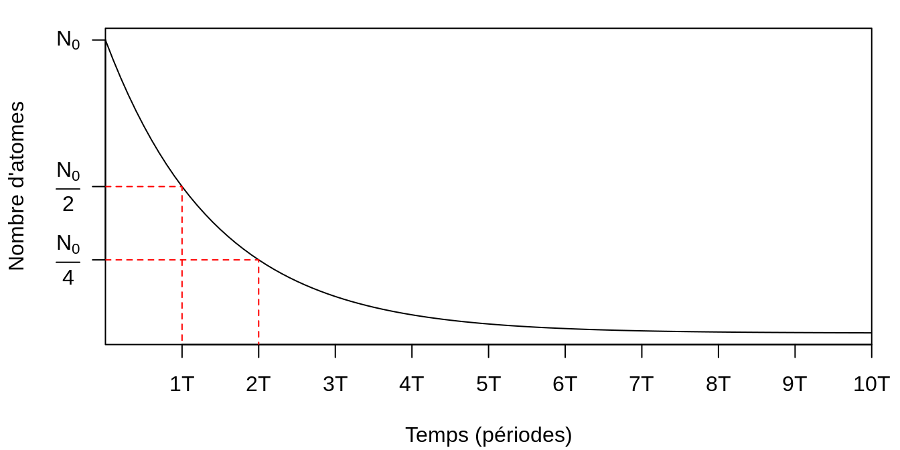
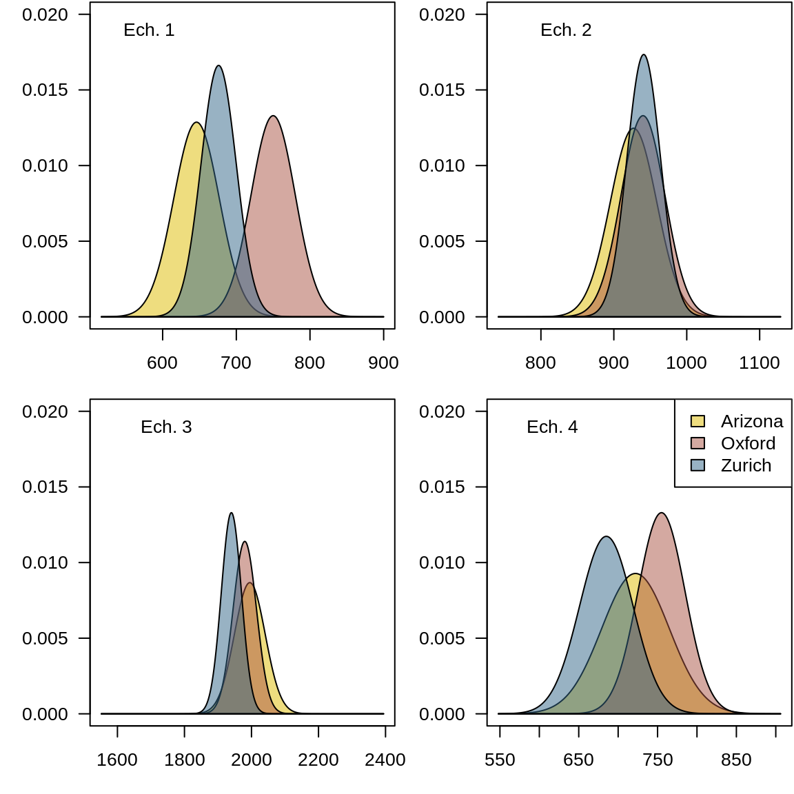
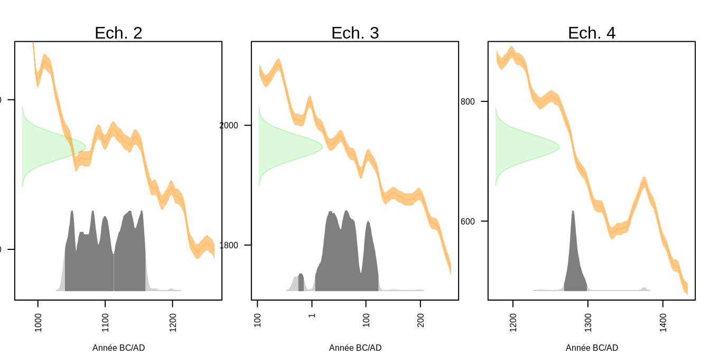
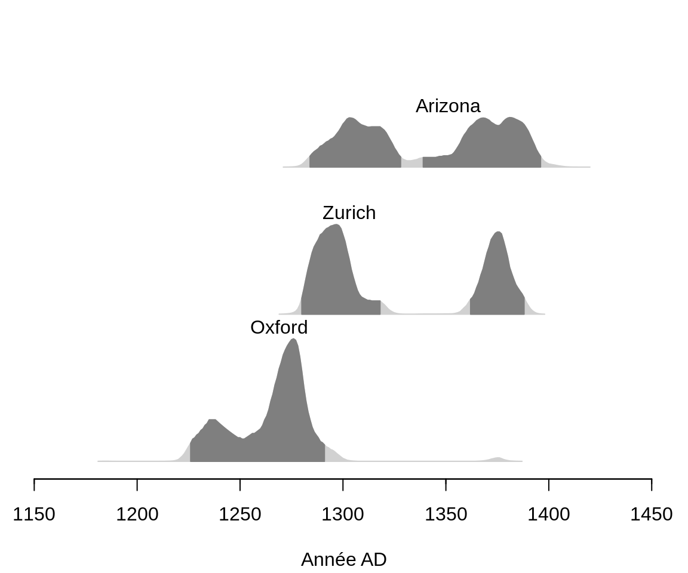
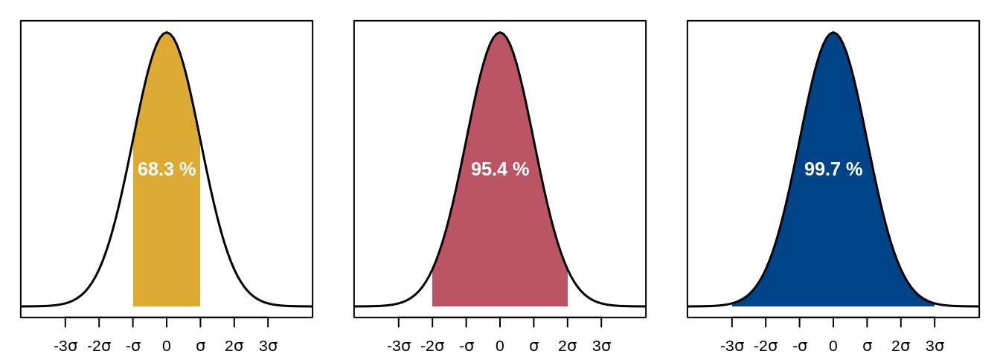
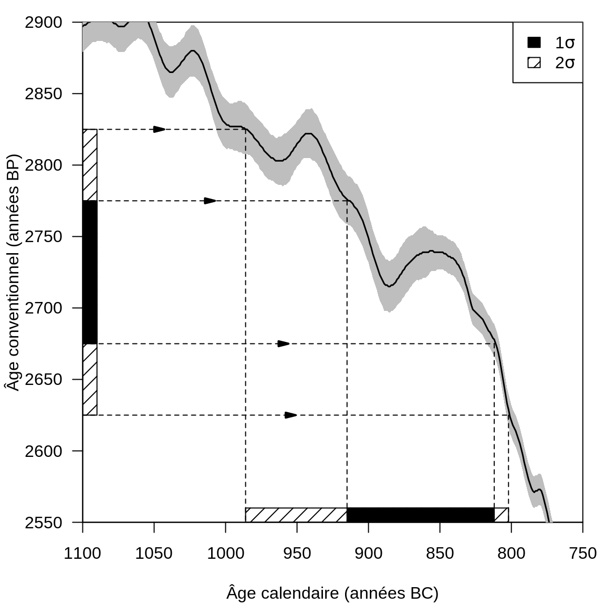
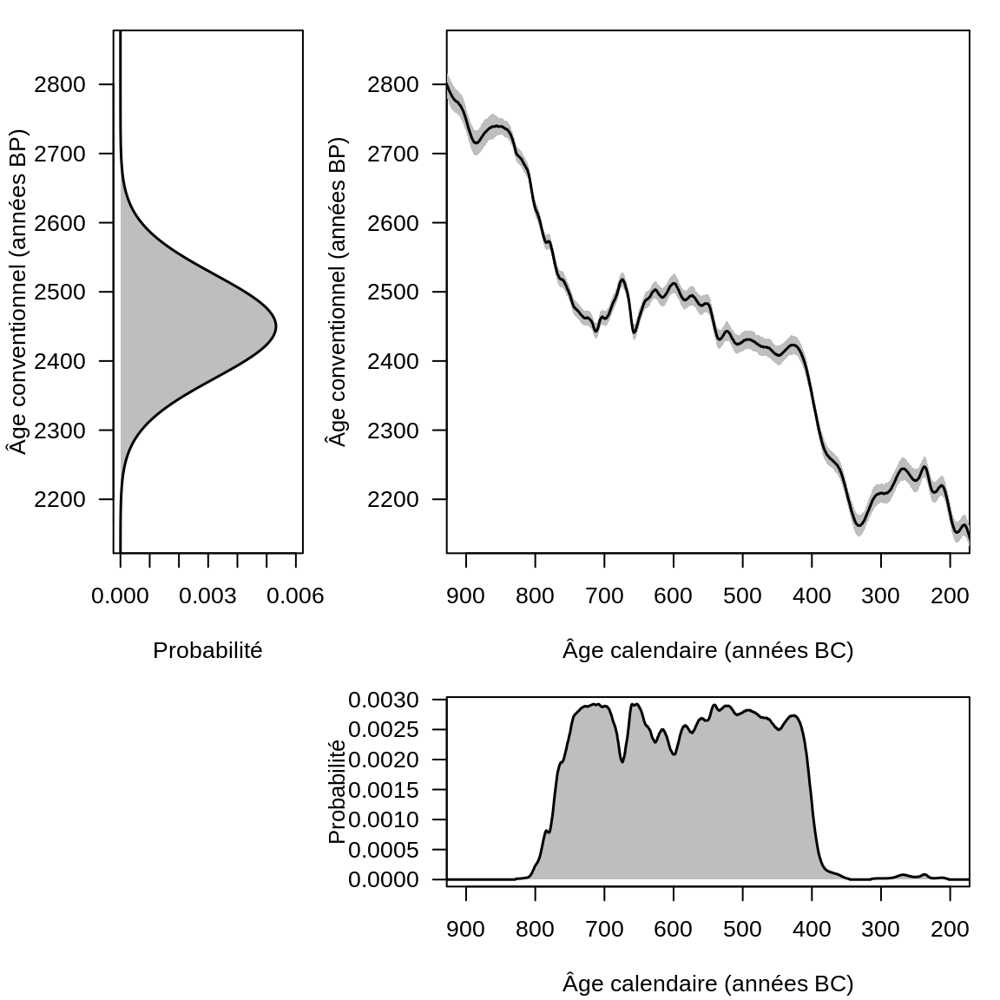
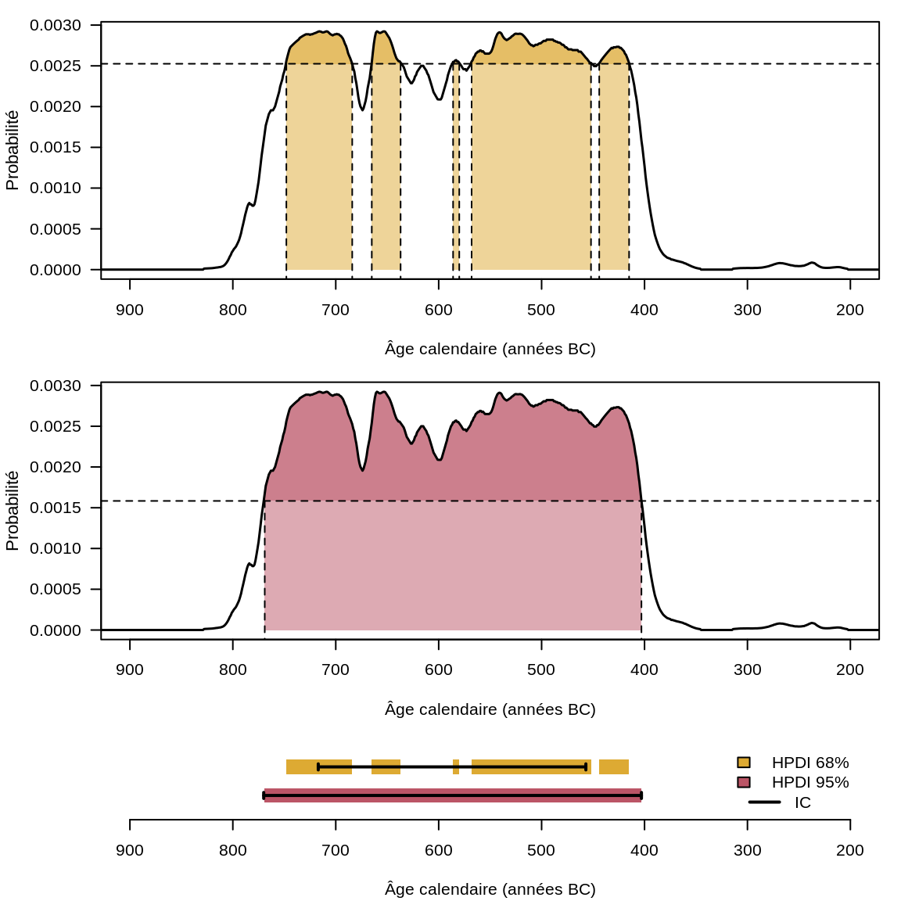

24 Chronologie quantitative
24.1 Calibrer des âges radiocarbones
Depuis sa découverte et la “révolution” qui s’en est suivie, la méthode de datation par le radiocarbone est devenue d’usage courant pour l’archéologue ou l’historien. Soit parce qu’elle constitue la seule source d’information chronologique, soit parce qu’elle intervient en complément d’autres sources, matérielles ou textuelles.
L’objectif de cette section est d’apprendre à calibrer147 des âges radiocarbone individuels, à combiner plusieurs âges en un seul et à en tester les différences148. La méthode du radiocarbone est une méthode de datation dite absolue (cf. chapitre 22) qui possède son propre référentiel temporel. La calibration est alors une étape indispensable, permettant le passage du référentiel radiocarbone à un référentiel calendaire.
24.1.1 Le principe de la datation par le radiocarbone
Proposée à la fin des années 1940 par Willard Libby et ses collègues,149 la méthode du radiocarbone utilise la décroissance radioactive du carbone 14 (14C) pour construire un chronomètre. Ce dernier permet d’estimer des âges, c’est-à-dire des intervalles de temps mesurés depuis le présent.150 Par convention, les âges radiocarbone sont ainsi exprimés en (kilo) années BP (Before Present, avant 1950151).
L’élaboration d’un chronomètre suppose de vérifier trois conditions nécessaires :
- Le phénomène choisi doit suivre une loi qui varie au cours du temps ;
- La loi en question doit être indépendante des conditions du milieu ;
- Un événement initial doit pouvoir être déterminé.
Le 14C est un est des trois isotopes du carbone avec le 12C et le 13C. Le 14C est un isotope radioactif : il tend à se désintégrer au cours du temps selon une loi exponentielle décroissante. Il s’agit d’un phénomène nucléaire, indépendant du milieu. Pour un isotope donné, ce phénomène de décroissance radioactive peut être décrit à l’aide une grandeur particulière, la période radioactive (notée \(T\), également appelée demi-vie). Cette dernière correspond au temps nécessaire à la désintégration de la moitié d’une quantité intiale d’atomes.
La période du 14C est de 5730 ± 40 ans : pour une quantité initiale \(N_0\) d’atomes de 14C, il en reste \(\frac{N_0}{2}\) au bout de 5730 ans, \(\frac{N_0}{4}\) au bout de 11460 ans, etc. (fig. 24.1). Au bout de 8 à 10 périodes (environ 45000 à 55000 ans), on considère que la quantité de 14C est trop faible pour être mesurée : c’est la limite de la méthode.

Figure 24.1: Décroissance exponentielle d’une quantité \(N_0\) d’atomes radioactifs au cours du temps (exprimé en périodes radioactives).
Le carbone 14 est produit naturellement en haute atmosphère sous l’effet des rayonnements cosmiques. Il est ensuite progressivement absorbé par les organismes vivants au fil de la chaîne trophique (en commençant par les organismes photosynthétiques). On considère alors que la teneur en 14C dans les organismes vivants est constante et à l’équilibre avec la teneur atmosphérique152.
Lorsqu’un organisme meurt, les échanges avec le milieu s’arrêtent. En supposant qu’il n’y ait pas de contamination extérieure, on considère que le système est clos : la décroissance radioactive est le seul phénomène affectant la quantité de 14C contenue dans l’organisme. L’événement daté par le radiocarbone est ainsi la mort de l’organisme.
Sauf à rechercher spécifiquement à quand remonte la mort d’un organisme, le radiocarbone fournit donc un terminus ante ou post quem pour l’événement archéologique que l’on souhaite positionner dans le temps. C’est-à-dire le moment avant ou après lequel a eu lieu l’événement archéologique ou historique d’intérêt (abandon d’un objet, combustion d’un foyer, dépôt d’une couche sédimentaire, etc.) en fonction des éléments contextuels disponibles (stratigraphie, etc.). Ces éléments contextuels sont d’autant plus importants qu’ils participent à l’interprétation des résultats, en s’assurant notamment de l’absence de problèmes d’ordre taphonomique et qu’il existe bien une relation univoque entre l’échantillon daté et l’événement d’intérêt153.
Grâce à la loi de décroissance radioactive, si on connaît la quantité initiale (\(N_0\)) de 14C contenue dans un organisme à sa mort (instant \(t_0\)) et la quantité restante de 14C à un instant \(t\), il est possible de mesurer le temps écoulé entre \(t_0\) et \(t\) : l’âge radiocarbone d’un objet archéologique.
- La quantité actuelle de 14C dans un objet peut être déterminée en laboratoire, soit en comptant les noyaux de 14C, soit en comptant le nombre de désintégration par unité de temps et par quantité de matière (activité spécifique).
- Pour déterminer la quantité initiale, la méthode du radiocarbone repose sur l’hypothèse suivante : la quantité de 14C dans l’atmosphère est constante dans le temps et égale à la teneur actuelle.
Ce postulat de départ a permis à Libby et ses collègues de démontrer la faisabilité de la méthode en réalisant les premières datations radiocarbones sur des objets d’âge connus par ailleurs.154 Au regard des résultats alors obtenus, il apparaît qu’il existe une relation linéaire entre les âges radiocarbone mesurés et les âges calendaires connus par d’autres méthodes (fig. 24.2A).
24.1.2 Pourquoi calibrer des âges radiocarbone ?
Les études menées dans la seconde moitié du XXe siècle, à mesure que des objets de plus en plus anciens sont datés, ont néanmoins permis de mettre en évidence un écart de plus en plus important entre l’âge mesuré et l’âge attendu.
Contrairement au postulat de Libby, la teneur en 14C dans l’atmosphère n’est pas constante au cours du temps, expliquant en partie les écarts observés. La teneur atmosphérique en 14C varie en fonction de phénomènes naturels (variations du champ magnétique terrestre, activité solaire, activité volcanique, cycle du carbone…) et anthropiques. Ces phénomènes peuvent être contradictoires : l’usage des combustibles fossiles libère du carbone très ancien et tend à diminuer la teneur relative de 14C (effet Suess), à l’inverse les essais nucléaires atmosphériques ont produit de grandes quantités de 14C.
Le chronomètre que constitue la méthode du radiocarbone n’a donc pas un rythme régulier (car la teneur atmosphérique en 14C varie au cours du temps). En conséquence, les âges radiocarbone (on utilisera par la suite l’expression d’âges conventionnels) appartiennent à un référentiel temporel qui leur est propre.
L’utilisation du postulat de Libby demeure néanmoins la seule façon accessible pour estimer la quantité initiale de 14C à la fermeture du système. Il est donc nécessaire de réaliser une opération dite de calibration pour transformer un âge conventionnel en âge calendaire. Cette opération est réalisée à l’aide d’une courbe155 dont l’estimation est régulièrement mise à jour par la communauté scientifique156. La courbe de calibration est construite en datant des échantillons à la fois par le radiocarbone et par une méthode indépendante, offrant ainsi une table d’équivalence entre temps radiocarbone et temps calendaire (fig. 24.2B).
![Âges mesurées par le radiocarbone en fonction des âges calendaires attendus. (A) *Curve of Knowns*, âges radiocarbones d'objets archéologiques dont l'âge calendaire est connu par des méthodes indépendantes (d'après Arnold et Libby, 1949). La droite 1:1, pour laquelle un âge conventionnel est égal à un âge calendaire, est représentée en tirets. (B) Courbes de calibration IntCal09, IntCal13 et IntCal20 (Reimer *et al.* 2009, 2013 et 2020). L'écart à la droite 1:1 (tirets) est d'autant plus marqué que les âges sont anciens.](chapter_chronology_files/figure-html/c14-intcal-1.png)
Figure 24.2: Âges mesurées par le radiocarbone en fonction des âges calendaires attendus. (A) Curve of Knowns, âges radiocarbones d’objets archéologiques dont l’âge calendaire est connu par des méthodes indépendantes (d’après Arnold et Libby, 1949). La droite 1:1, pour laquelle un âge conventionnel est égal à un âge calendaire, est représentée en tirets. (B) Courbes de calibration IntCal09, IntCal13 et IntCal20 (Reimer et al. 2009, 2013 et 2020). L’écart à la droite 1:1 (tirets) est d’autant plus marqué que les âges sont anciens.
24.1.4 Applications
De nombreux outils sont aujourd’hui disponibles pour calibrer des âges radiocarbone. OxCal, CALIB et ChronoModel offrent cette possibilité, mais sont plutôt destinés à traiter des problèmes de modélisation bayésienne de séquences chronologiques. R offre une alternative intéressante en permettant notamment d’intégrer le traitement d’âges radiocarbone à des études plus larges (analyse spatiale etc.).
Plusieurs packages R permettent de réaliser des calibrations d’âges radiocarbone (Bchron, IntCal, oxcAAR…) et sont souvent orientés vers un aspect particulier de l’analyse, offrant ainsi des fonctionnalités différentes (construction de chronologies, modèles âges-profondeur, etc.). La solution retenue ici est rcarbon.160 Ce package permet de calibrer simplement et d’analyser des âges radiocarbone.
24.1.4.1 Cas d’étude
Afin d’aborder concrètement la question de la calibration d’âges radiocarbone, nous allons nous pencher sur l’exemple de la datation du Suaire de Turin. Réalisée à la fin des années 1980, cette dernière constitue un cas d’école en matière de datation d’un objet historique par la méthode du radiocarbone. Trois datations indépendantes d’un même prélèvement ont été réalisées en aveugle, avec des échantillons de contrôle.
En avril 1988, un échantillon de tissu est prélevé sur le Suaire de Turin. Trois laboratoires différents ont été sélectionnés l’année précédente et reçoivent chacun un fragment de ce même échantillon. En complément, trois autres tissus dont les âges calendaires sont connus par d’autres méthodes sont également échantillonnés. Ces trois échantillons supplémentaires doivent servir d’échantillons de contrôle, afin de valider les résultats de chaque laboratoire et de s’assurer que les résultats des différents laboratoires sont bien compatibles entre eux. Chaque laboratoire a reçu quatre échantillons et réalisé les mesures en aveugle, sans savoir lequel correspond au Suaire.161
Le tableau 24.1 présente ainsi les âges radiocarbone obtenus (\(1\sigma\)) dans le cadre de l’étude du Suaire de Turin162 et ce pour les trois laboratoires (Arizona, Oxford et Zurich). L’échantillon 1 (Éch. 1) correspond au tissu prélevé sur le Suaire de Turin; l’échantillon 2 (Éch. 2) représente un fragment de lin provenant d’une tombe de Qasr Ibrîm en Égypte, daté des XIe-XIIe siècles de notre ère; l’échantillon 3 (Éch. 3) correspond à un fragment de lin associé à une momie de Thèbes (Égypte), daté entre -110 et 75. Enfin, l’échantillon 4 (Éch. 4) est constitué de fils de la chape de St-Louis d’Anjou (France), daté entre 1290 et 1310.
| Laboratoire | Éch. 1 | Éch. 2 | Éch. 3 | Éch. 4 |
|---|---|---|---|---|
| Arizona | 646 ± 31 | 927 ± 32 | 1995 ± 46 | 722 ± 43 |
| Oxford | 750 ± 30 | 940 ± 30 | 1980 ± 35 | 755 ± 30 |
| Zurich | 676 ± 24 | 941 ± 23 | 1940 ± 30 | 685 ± 34 |
## Import des données
turin <- matrix(
data = c(
646, 927, 1995, 722, 31, 32, 46, 43,
750, 940, 1980, 755, 30, 30, 35, 30,
676, 941, 1940, 685, 24, 23, 30, 34
),
nrow = 3,
byrow = TRUE
)
colnames(turin) <- c("age1", "age2", "age3", "age4",
"err1", "err2", "err3", "err4")
rownames(turin) <- c("Arizona", "Oxford", "Zurich")Ensuite, on remet en forme les données dans un array, obtenant ainsi un tableau à 3 dimensions : la 1ère dimension (lignes) correspond aux laboratoires, la 2ème dimension (colonnes) correspond aux échantillons, la 3ème dimension permet de distinguer les âges et leurs incertitudes.
dim(turin) <- c(3, 4, 2)
dimnames(turin) <- list(
c("Arizona", "Oxford", "Zurich"),
paste("Ech.", 1:4, sep = " "),
c("age", "erreur")
)
turin
#> , , age
#>
#> Ech. 1 Ech. 2 Ech. 3 Ech. 4
#> Arizona 646 927 1995 722
#> Oxford 750 940 1980 755
#> Zurich 676 941 1940 685
#>
#> , , erreur
#>
#> Ech. 1 Ech. 2 Ech. 3 Ech. 4
#> Arizona 31 32 46 43
#> Oxford 30 30 35 30
#> Zurich 24 23 30 34Avant de calibrer les âges radiocarbone obtenus, plusieurs questions préalables peuvent être explorées.
24.1.4.2 Comment visualiser les données produites ?
Dans le cas présent, plusieurs laboratoires ont daté les mêmes objets. Dans un premier temps, on cherche donc à savoir si les âges obtenus pour chaque objet par les différents laboratoires sont compatibles entre eux. Cette compatibilité s’entend en prenant en compte les incertitudes associées aux âges.
Une fois les données importées et mises en forme, une première approche consiste à les visualiser. On peut ainsi se faire une première idée quant à la compatibilité des résultats fournis par les différents laboratoires pour chaque objet daté. Le code suivant permet de générer la figure 24.7 où sont figurées les distributions des âges conventionnels de chaque échantillon.
## On fixe les paramètres graphiques
par(mfrow = c(2, 2), mar = c(3, 4, 0, 0) + 0.1, las = 1)
## On défini les couleurs à utiliser
couleurs <- c("#DDAA33", "#BB5566", "#004488")
## On ajoute de la transparence pour permettre la superposition
couleurs <- rgb(col2rgb(couleurs) / 255, alpha = 0.5)
## Pour chaque objet daté...
for (j in 1:ncol(turin)) {
## On défini l'étendue des valeurs en abscisse (années)
k <- range(turin[, j, 1])
x <- seq(min(k) * 0.8, max(k) * 1.2, by = 1)
## On défini un graphique vide auquel ajouter les distributions
plot(x = NULL, y = NULL, xlim = range(x), ylim = c(0, 0.02),
xlab = "", ylab = "", type = "l")
## On affiche le nom de l'échantillon
text(x = min(k) * 0.9, y = 0.02, labels = colnames(turin)[j], pos = 1)
## Pour chaque âge obtenu...
for (i in 1:nrow(turin)) {
## On calcule la fonction de densité de la distribution normale
y <- dnorm(x = x, mean = turin[i, j, 1], sd = turin[i, j, 2])
## On trace la courbe
polygon(x = x, y = y, col = couleurs[[i]])
}
}
## On ajoute une légende au dernier graphique
legend("topright", legend = rownames(turin), fill = couleurs)
Figure 24.7: Distribution des âges conventionnels par laboratoire.
La figure 24.7 permet de constater que l’échantillon 1 présente des âges ne se recouvrant que faiblement entre eux, au contraire des trois autres échantillons datés. Partant de cette première observation, on va donc tester l’homogénéité des résultats des différents laboratoires.
24.1.4.3 Les résultats des différents laboratoires sont-ils homogènes ?
Pour répondre à cette question, les auteurs de l’étude de 1988 suivent la méthodologie proposée par Ward et Wilson (1978). Celle-ci consiste à réaliser un test statistique d’homogénéité dont l’hypothèse nulle (\(H_0\)) peut être formulée comme suit : “les âges mesurés par les différents laboratoires sur un même objet sont égaux”.
Pour cela, on commence par calculer l’âge moyen de chaque objet (\(\bar{x}\)). Celui-ci correspond à la moyenne pondérée des âge obtenus par chaque laboratoire. L’usage d’un facteur de pondération (l’inverse de la variance, \(w_i = \frac{1}{\sigma_i^2}\)) permet d’ajuster la contribution relative de chaque date (\(x_i\)) à la valeur moyenne.
\[ \bar{x} = \frac{\sum_{i=1}^{n}{w_i x_i}}{\sum_{i=1}^{n}{w_i}} \]
À cet âge moyen est également associée une incertitude (\(\sigma\)) : \[ \sigma = \sqrt{\sum_{i=1}^{n}{w_i}} \]
À partir de cette valeur moyenne, on peut calculer une variable de test statistique (\(T\)) permettant la comparaison des âges mesurés à un âge théorique (ici l’âge moyen) pour chaque objet daté.
\[ T = \sum_{i=1}^{n}{\left( \frac{x_i - \bar{x}}{\sigma_i} \right)^2} \]
\(T\) est une variable aléatoire qui suit une loi du \(\chi^2\) avec \(n-1\) degrés de liberté (\(n\) est le nombre de datations par objet, ici \(n = 3\)). À partir de \(T\), il est possible de calculer la valeur \(p\), c’est-à-dire le risque de rejeter l’hypothèse nulle alors que celle-ci est vraie. En comparant la valeur \(p\) à un seuil \(\alpha\) fixé à l’avance, on peut déterminer s’il est possible ou non de rejeter \(H_0\) (si \(p\) est supérieure à \(\alpha\), alors on ne peut rejeter l’hypothèse nulle). On fixe ici cette valeur \(\alpha\) à 0,05. On estime ainsi qu’un risque de 5 % de se tromper est acceptable.
Le code suivant permet de calculer pour chaque échantillon, son âge moyen, l’incertitude associée, la statistique \(T\) et la valeur \(p\).
## On construit un data.frame pour stocker les résultats
## Chaque ligne correspond à un échantillon
## Les colonnes correspondent à :
## - L'âge moyen
## - L'incertitude associée à l'âge moyen
## - La statistique du test d'homogénéité
## - La valeur p du test d'homogénéité
dates <- as.data.frame(matrix(nrow = 4, ncol = 4))
rownames(dates) <- paste("Ech.", 1:4, sep = " ")
colnames(dates) <- c("age", "erreur", "chi2", "p")
## Pour chaque objet daté...
for (j in 1:ncol(turin)) {
age <- turin[, j, 1] # On extrait les âges
inc <- turin[, j, 2] # On extrait les incertitudes
# On calcule la moyenne pondérée
w <- 1 / inc^2 # Facteur de pondération
moy <- stats::weighted.mean(x = age, w = w)
# On calcule l'incertitude associée à la moyenne pondérée
err <- sum(1 / inc^2)^(-1 / 2)
# On calcule la statistique du test
chi2 <- sum(((age - moy) / inc)^2)
# On calcule la valeur-p
p <- 1 - pchisq(chi2, df = 2)
# On stocke les résultats
# On arrondi au passage les ages à l'année
# (une précision sub-annuelle n'a aucun sens)
dates[j, ] <- c(round(moy), round(err), chi2, p)
}
dates
#> age erreur chi2 p
#> Ech. 1 689 16 6.3518295 0.04175589
#> Ech. 2 937 16 0.1375815 0.93352200
#> Ech. 3 1964 20 1.3026835 0.52134579
#> Ech. 4 724 20 2.3856294 0.30336618On constate que l’échantillon 1 présente une valeur \(p\) de 0.04. Comme celle-ci est inférieure au seuil \(\alpha\) fixé, l’hypothèse \(H_0\) peut être rejetée. Cela signifie que les différences observées entre les âges obtenus sur cet échantillon sont significatives. Les valeurs \(p\) obtenues pour les autres échantillons sont respectivement de 0.93, 0.52, 0.3 : l’hypothèse \(H_0\) ne peut être donc rejetée dans ces cas.
Cette fluctuation des âges de l’échantillon 1 est vraisemblablement liée à une hétérogénéité des mesures au sein d’un des laboratoires163.
24.1.4.4 Calibrer les âges
Conformément aux résultats des tests précédents, les différents âges obtenus pour l’échantillon 1 seront calibrés séparément, tandis que l’on va pouvoir calibrer l’âge moyen des échantillons 2, 3 et 4. La calibration est réalisée avec la fonction calibrate() du package rcarbon. On peut ensuite utiliser summary() pour obtenir un résumé des âges calibrés (par défaut, summary() retourne des âges calibrés exprimés en années cal BP).
## Chargement du package rcarbon
library(rcarbon)
## On calibre les âges de l'échantillon 1
ages_ech1 <- calibrate(
x = turin[, 1, 1], # On sélectionne les âges de l'échantillon 1
errors = turin[, 1, 2], # On sélectionne les incertitudes associées
ids = rownames(turin), # On précise les noms des âges (laboratoires)
calCurves = "intcal20", # On choisit la courbe IntCal20
verbose = FALSE
)
## On affiche les âges calibrés à 95%
summary(ages_ech1, prob = 0.95)
#> DateID MedianBP p_0.95_BP_1 p_0.95_BP_2
#> 1 Arizona 600 667 to 623 612 to 555
#> 2 Oxford 682 725 to 660 NA to NA
#> 3 Zurich 648 671 to 633 589 to 563
## On calibre les âges combinés
ages_comb <- calibrate(
x = dates$age,
errors = dates$erreur,
ids = rownames(dates),
calCurves = "intcal20",
verbose = FALSE
)
## On affiche les âges calibrés à 95%
summary(ages_comb, prob = 0.95)
#> DateID MedianBP p_0.95_BP_1 p_0.95_BP_2
#> 1 Ech. 1 659 671 to 648 581 to 571
#> 2 Ech. 2 850 910 to 839 837 to 792
#> 3 Ech. 3 1892 1974 to 1966 1943 to 1829
#> 4 Ech. 4 670 682 to 653 NA to NALa fonction hpdi() permet de calculer les intervalles HPD pour chaque âge calibrés (attention, hpdi() renvoie des âges exprimés en années cal BP) et la probabilité associée à chaque intervalle :
## Intervalles HPD à 95 % des âges de l'échantillon 1
(hpd_ech1 <- hpdi(ages_ech1, credMass = 0.95))
#> [[1]]
#> startCalBP endCalBP prob
#> [1,] 667 623 0.4298236
#> [2,] 612 555 0.5305958
#>
#> [[2]]
#> startCalBP endCalBP prob
#> [1,] 725 660 0.9505207
#>
#> [[3]]
#> startCalBP endCalBP prob
#> [1,] 671 633 0.5776311
#> [2,] 589 563 0.3795208
## Intervalles HPD à 95 % des âges combinés
(hpd_comb <- hpdi(ages_comb, credMass = 0.95))
#> [[1]]
#> startCalBP endCalBP prob
#> [1,] 671 648 0.7900124
#> [2,] 581 571 0.1655072
#>
#> [[2]]
#> startCalBP endCalBP prob
#> [1,] 910 839 0.5549372
#> [2,] 837 792 0.4040575
#>
#> [[3]]
#> startCalBP endCalBP prob
#> [1,] 1974 1966 0.02116099
#> [2,] 1943 1829 0.93518667
#>
#> [[4]]
#> startCalBP endCalBP prob
#> [1,] 682 653 0.952709924.1.4.5 Comment interpréter ces âges ?
On s’intéresse en premier aux échantillons de contrôle 2, 3 et 4. Les distributions des âges conventionnels (axe des ordonnées) et calendaires (axe des abscisses) peuvent être représentés avec la courbe de calibration à l’aide de la fonction plot(). La figure 24.8 permet alors de constater que leurs âges calibrés sont en accord avec les datations connues par ailleurs.
## On fixe les paramètres graphiques
par(mfrow = c(1, 3), mar = c(4, 1, 3, 1) + 0.1, las = 1)
## Pour les échantillons 2, 3 et 4...
for (i in 2:4) {
plot(
x = ages_comb,
ind = i,
HPD = TRUE,
credMass = 0.95, # 95%
calendar = "BCAD", # Référence calendaire
xlab = "Année BC/AD",
axis4 = FALSE
)
mtext(text = rownames(dates)[[i]], side = 3)
}
Figure 24.8: Distribution des âges conventionnels et calendaires des âges moyens des échantillons 2, 3 et 4. Les zones en gris foncé correspondent à l’intervalle HPD à 95%. Courbe IntCal20.
- L’âge calendaire de l’échantillon 2 a 95 % de chance (intervalle HPD) de se trouver dans l’union des intervalles [1040;1109] (54 %) et [1113;1158] (40 %), en accord avec une datation attendue autour des XIe-XIIe siècles de notre ère.
- L’âge calendaire de l’échantillon 3 a 95 % de chance (intervalle HPD) de se trouver dans l’union des intervalles [-25;-17] (2 %) et [7;121] (93 %), en accord avec une datation attendue entre -110 et 75.
- L’âge calendaire de l’échantillon 4 a 95 % de chance (intervalle HPD) de se trouver entre 1267 et 1297, en accord avec une datation attendue entre 1290 et 1310.
Les âges radiocarbone obtenus par les différents laboratoires pour l’échantillon 1 ont été calibrés séparément. La fonction multiplot() permet de représenter simultanément les distributions des âges calibrés (exprimés en années BC/AD) pour les trois laboratoires (fig. 24.9).
## On fixe les paramètres graphiques
par(mar = c(4, 1, 0, 1) + 0.1)
## On représente les âges obtenus par les trois laboratoires (éch. 1)
multiplot(
x = ages_ech1,
type = "d",
decreasing = TRUE,
HPD = TRUE,
credMass = 0.95, # 95%
calendar = "BCAD", # Référence calendaire
xlab = "Année AD"
)
Figure 24.9: Distribution des âges calendaires de l’échantillon 1 obtenus par les différents laboratoires. Les zones en gris foncé correspondent à l’intervalle HPD à 95%. Courbe IntCal20.
Si l’analyse des âges conventionnels obtenus par les différents laboratoires pour l’échantillon 1 révèle une certaine hétérogénéité, on constate néanmoins que les âges calibrés appartiennent tous aux XIIIe et XIVe siècles. Bien qu’on ne puisse donner un intervalle plus précis, ces résultats sont en accord avec l’apparition des premières mentions écrites du Suaire et permettent raisonnablement d’exclure l’hypothèse d’authenticité de la relique.
24.1.4.6 Comment présenter ses résultats ?
Pour communiquer ou publier des âges radiocarbone de manière rigoureuse et permettre de vérifier les résultats et d’en faire usage, il est nécessaire de toujours faire figurer un certain nombre d’éléments. Par exemple, on écrira :
L’échantillon ETH-3883 est daté à 676 ± 24 ans BP, calibré à [671;633] (58 %) ou [589;563] (38 %) cal BP soit [1279;1317] (58 %) ou [1361;1387] (38 %) AD (intervalles HPD à 95 %) avec IntCal20 (Reimer et al. 2020), R version 4.2.0 (2022-04-22)164 et le package rcarbon version 1.4.3.165
Sous cette forme, on dispose ainsi des éléments suivants166 :
- L’âge conventionnel et son incertitude (676 ± 24 ans BP), accompagnés du numéro d’identification donné par le laboratoire (ETH-3883) ;
- L’âge calibré sous la forme d’un ou plusieurs intervalles (du fait de sa distribution particulière, un âge calibré est toujours donné sous la forme d’intervalles), en précisant la probabilité associée à chaque intervalle et le référentiel temporel utilisé (cal BP ou BC/AD) ;
- La courbe de calibration utilisée et la référence correspondante : IntCal20 (Reimer et al. 2020) ;
- Les versions de R et du package utilisées : R version 4.2.0 (2022-04-22) et rcarbon version 1.4.3.
24.1.3 Comment calibrer ?
Nous venons donc de voir qu’il était nécessaire de calibrer ses âges radiocarbone. Sur le papier, le processus de calibration est relativement simple, grâce à la table d’équivalence entre temps radiocarbone et temps calendaire. Dans les faits, le processus de calibration se trouve complexifié par la prise en compte des erreurs inévitablement associées aux mesures physiques.
Un âge conventionnel (noté ici \(t\)) est le résultat d’une mesure et, comme il n’existe pas de mesure parfaite, il est toujours accompagné d’un terme correspondant à l’incertitude analytique (\(\Delta t\)) et exprimé sous la forme \(t \pm \Delta t\) (l’âge, plus ou moins son incertitude). Cette incertitude résulte de la combinaison des différentes sources d’erreur au sein du laboratoire : il s’agit d’une incertitude aléatoire inhérente à la mesure.
Un âge conventionnel est ainsi un estimateur du vrai âge radiocarbone de l’objet daté. Si on répète un très grand nombre de fois la datation d’un même échantillon, sa valeur est susceptible de varier et il y a très peu de chance qu’elle coïncide exactement avec l’âge radiocarbone vrai. Il est donc préférable de s’attacher à un intervalle dont il est hautement probable qu’il contienne la vraie valeur (inconnue) de l’âge conventionnel. De fait, l’incertitude caractérise la dispersion des valeurs qui pourraient raisonnablement être attribuées à l’âge vrai. Un âge conventionnel est la réalisation d’un processus aléatoire, la décroissance radioactive, il peut être modélisé à l’aide d’une loi de probabilité particulière : la loi normale.157
Seuls deux paramètres sont nécessaires pour caractériser la distribution des valeurs selon une loi normale : la moyenne \(\mu\) (tendance centrale) et l’écart-type \(\sigma\) (dispersion des valeurs). Les propriétés de la distribution normale sont telles que l’intervalle défini par \(\mu \pm \sigma\) contient 67 % des valeurs. Si on multiplie l’écart-type par deux, l’intervalle \(\mu \pm 2\sigma\) contient quant à lui 95 % des valeurs (fig. 24.3).
Ainsi, si on exprime l’incertitude d’un âge conventionnel en fonction de l’écart-type, il y a 68 % de chance que l’intervalle à \(1\sigma\) contienne l’âge conventionnel vrai. De même, l’intervalle à \(2\sigma\) a 95 % de chance de contenir l’âge conventionnel vrai. L’intervalle à \(1\sigma\) est moins dispersé, mais a moins de chance d’être juste qu’à \(2\sigma\) : la plage de valeurs retenues est plus resserrée, mais elle a moins de chance de contenir l’âge conventionnel vrai.

Figure 24.3: Loi normale de moyenne 0 et d’écart-type 1 avec les plâge de normalité aux niveaux de confiance 68, 95 et 99 %. La distribution des valeurs est telle que la dispersion est symétrique autour de la tendance centrale.
L’approche la plus élémentaire pour la calibration d’un âge radiocarbone consiste à intercepter la courbe de calibration entre les bornes d’incertitude (\(t - \Delta t\) et \(t + \Delta t\) dans le cas à \(1\sigma\)) pour obtenir l’intervalle d’âges calendaires correspondants. Ceci est illustré par la figure 24.4, qui présente la calibration d’un âge conventionnel par interception d’une courbe de calibration (train plein) dont l’incertitude est figurée par un bandeau gris. Les âges conventionnels et calendaires sont figurés à \(1\sigma\) (bandes noir) et à \(2\sigma\) (bandes hachurée).

Figure 24.4: Calibration d’un âge conventionnel de 2725 ± 50 ans BP par interception de la courbe de calibration IntCal20.
Cette approche ne tient cependant pas compte du fait qu’un âge radiocarbone est décrit par une distribution normale. Dans la plage définie par l’âge radiocarbone plus ou moins son incertitude, toutes les valeurs n’ont pas la même probabilité de coïncider avec l’âge radiocarbone vrai, or la calibration par simple interception suppose l’inverse. De fait, l’approche aujourd’hui courante158 consiste à prendre également en compte la distribution normale des âges radiocarbone. On trouve parfois l’expression de calibration probabiliste pour la désigner. Cette méthode de calibration recourt à des méthodes numériques et la distribution des âges calendaires qui en résulte n’est pas équiprobable (fig. 24.5).
S’il est aisé de décrire un âge conventionnel et son incertitude avec une loi normale, il en va autrement d’un âge calendaire une fois calibré. Du fait des oscillations de la courbe de calibration, il n’est en effet pas possible de décrire la distribution d’un âge calendaire avec une loi de probabilité particulière, comme on peut le constater sur la figure 24.5. Ainsi, un âge calibré ne peut être exprimé autrement que sous la forme d’un intervalle.

Figure 24.5: Distributions d’un âge radiocarbone de 2450 ± 75 ans BP avant et après calibration, respectivement en haut à gauche et en bas à droite. En haut à droite : extrait de la courbe de calibration IntCal20 (trait plein) et erreur associée (bandeau gris).
L’intervalle auquel appartient un âge calendaire résulte à la fois de l’incertitude de l’âge conventionnel, de l’allure de la courbe de calibration et de l’incertitude associée à cette dernière. Cet intervalle, entre les bornes duquel l’âge calendaire a une probabilité donnée d’être compris, peut être obtenu de deux manières distinctes (fig. 24.6) :
Lorsque la distribution d’un âge calibré est multimodale (en dents de scie), l’intervalle à plus hautes densités correspond souvent à l’union de plusieurs intervalle disjoints, au contraire de l’intervalle de crédibilité qui fourni toujours une gamme continue de valeurs.159 L’intervalle à plus hautes densités est ainsi souvent plus informatif, raison pour laquelle il est couramment utilisé pour présenter des résultats calibrés.
Il existe des périodes qui sont plus ou moins propices à des datations radiocarbone, en fonction de l’allure de la courbe. Le cas le moins favorable est l’existence de plateaux au sein de la courbe de calibration. Un cas typique est le plateau de l’Âge du Fer (fig. 24.5). Par exemple, un âge conventionnel de 2450 ± 75 ans BP correspond, une fois calibré à 95 % (intervalle HPD), à un âge calendaire compris entre 2718 et 2354 ans cal BP (soit 768-404 avant notre ère). Ainsi, malgré un âge conventionnel avec une incertitude assez faible (3 %), l’âge calendaire correspondant a 95 % de chance de se trouver dans un intervalle de temps qui couvre la quasi-totalité du premier Âge du Fer (fig. 24.5). En réalisant la calibration à 68 % (intervalle HPD), on se retrouve confronté à une autre difficulté liée aux oscillations de la courbe de calibration. L’âge calendaire a 68 % de chance d’appartenir à l’union des intervalles 748-685 (18 %), 665-637 (8 %), 586-580 (2 %), 568-452 (32 %), 444-415 (8 %) avant notre ère et non à un unique intervalle (fig. 24.6).

Figure 24.6: Estimation des intervalles calibrés. Les deux graphiques du haut illustrent l’estimation des régions de plus hautes densités à 68 % et 95 %. Le graphique du bas permet de comparer les intervalles HPD ainsi obtenus et les intervalles de crédibilités correspondants (traits pleins).
Il est courant dans certains contextes de conserver des âges calibrés exprimés en années BP, dans ce cas il est recommandé de préciser cal BP pour éviter toute confusion du lecteur. Ces âges calendaires en années BP peuvent être convertis en dates exprimées avant ou après notre ère (BC/AD, before Christ/anno Domini). Pour cela, il suffit d’utiliser la règle de calcul suivante.
Pour convertir en années BC/AD un âge calibré (noté \(x\)) exprimé en années BP, sachant qu’il n’y pas d’année 0 dans le calendrier grégorien :
On comprend ainsi que ces particularités, si elles sont mal comprises, peuvent rapidement conduire à des surinterprétations. Au cours de l’étude d’un corpus de datations ou lors de sa publication, il est donc particulièrement important de présenter l’ensemble des données et des choix ayant concouru à l’obtention des âges calendaires. L’usage d’outils libres favorise à la fois la transparence et la reproductibilité des résultats, deux aspects particulièrement importants en ce qui concerne la calibration d’âges radiocarbone.